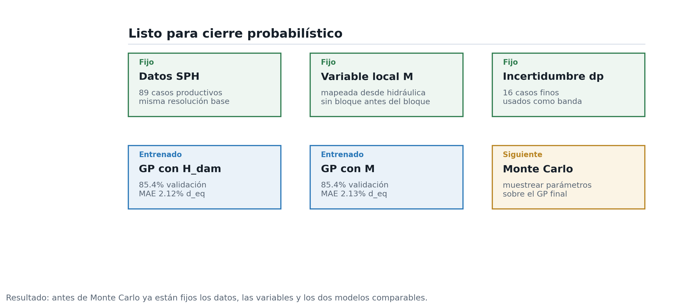

Cierre metodológico
Estado de la evidencia y consolidación necesaria antes de la etapa probabilística.
Estado metodológico
- Resolución
- cerrada dp=0.003 + dp=0.002
- Hidráulica local
- cerrada 14 casos
- Modelo GP
- entrenado 85.4%
- Monte Carlo
- 49.5%-58.4% banda probabilística
La etapa actual consolida una frontera física con incertidumbre de resolución cuantificada, un modelo GP local entrenado y una propagación probabilística inicial. El cierre queda expresado como una frontera con banda de resolución, no como un umbral unico.
Síntesis del estado
